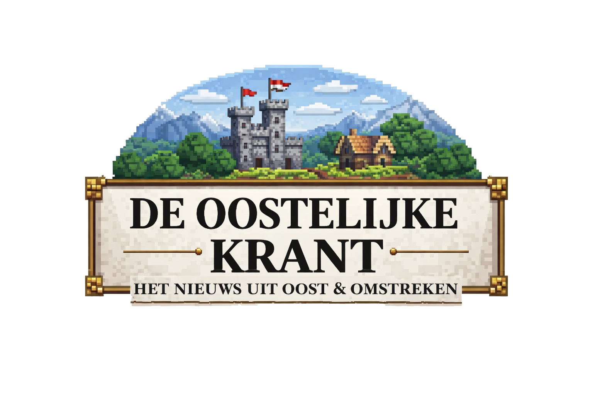

Het nieuws uit Oost & omstreken
De Oostelijke Krant
Oost bouwt door tussen politiek, revives en strijd
HOOFDVERHAAL 11-02-2026 · Locatie: Oost
Op 11 februari stond Oost in het teken van bouwen, besturen en overleven. Terwijl er werd gewerkt aan een nieuwe rechtbank, een bank en de muren van een kasteel, liepen politieke keuzes en gewapende spanningen door elkaar heen.
Bouwupdate: rechtbank, bank en kasteelmuren
De bouw van een nieuwe rechtbank is begonnen. Daarnaast is er een start gemaakt aan een nieuwe bank en zijn de eerste muren van een kasteel neergezet. Ook op spawn is doorgewerkt: wegen met lantaarnpalen zijn aangelegd en de infrastructuur krijgt duidelijk vorm.
Verder zijn op spawn koeien geland en villagers gecured. Daarmee wordt gewerkt aan een stabielere basis voor handel, voedsel en doorgroei.
Politiek en bestuur
ItzJulian_NL is gepromoveerd tot minister van volkshuisvesting en ruimtelijke orde. Deze rol richt zich op woningbouw en andere grote bouwprojecten binnen Oost.
Er is ook gestart aan het huis van de journalist, wat past bij de bredere opbouw van publieke functies op het eiland.
Bandiet en revive-deal
Volgens meldingen is er een "bandiet" langsgekomen, mogelijk een binnenlander. Er werd gesproken over een deal rond moordopdrachten, waar de leden van Oost nee op hebben gezegd.
Wel is er besloten om drie spelers van eiland Oost terug te brengen. De gekozen namen zijn: JackoH, sneeuwschep en sonicthies7.
Duel met fatale afloop
Er ontstond een gevecht tussen skoebidoemannen en pannekoek_8577. Aanleiding zou zijn dat skoebidoemannen door stage minder ging spelen en nog een gevecht wilde doen.
Tijdens dit gevecht is pannekoek_8577 overleden. Later op de dag volgde een revive van JakoDH en pannekoek_8577, nadat vier leden van Oost kort achter elkaar waren gestorven.
Haven en voorzieningen
De botenbar van Reskulls is afgerond. Daarmee krijgt het havengebied opnieuw een bruikbare ontmoetingsplek voor bewoners en bezoekers.